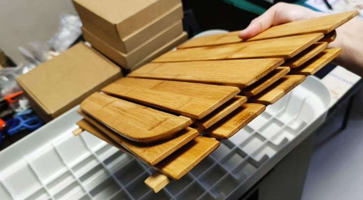
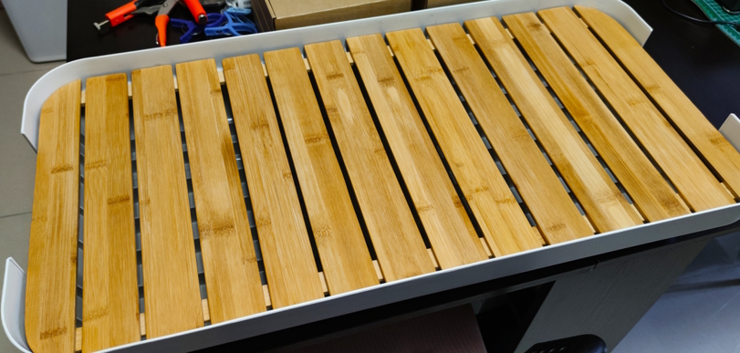
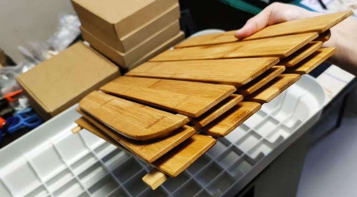
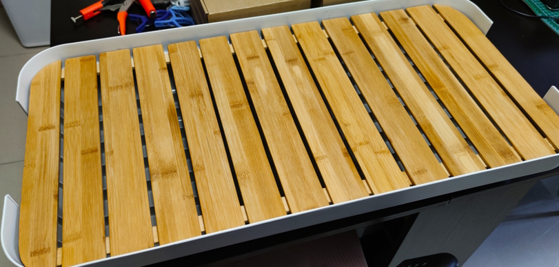

Hobbies
Camping Camping is a healthy activity, especially when you have children. Outdoor camping can bring many benefits. Children can explore nature and have many new attempts, which are lacking in urban life. Handmade camping table Handmade camping table, since I fell in love with camping, I tried to make some gadgets by hand, because the props I have made by myself I can feel more warm than things bought with money. One time, a friend saw my camping table I made by myself and suggested me I can sell it online. Luckily, I received a lot of inquiries. Since then, I have been producing a small amount of handmade camping table for sell.